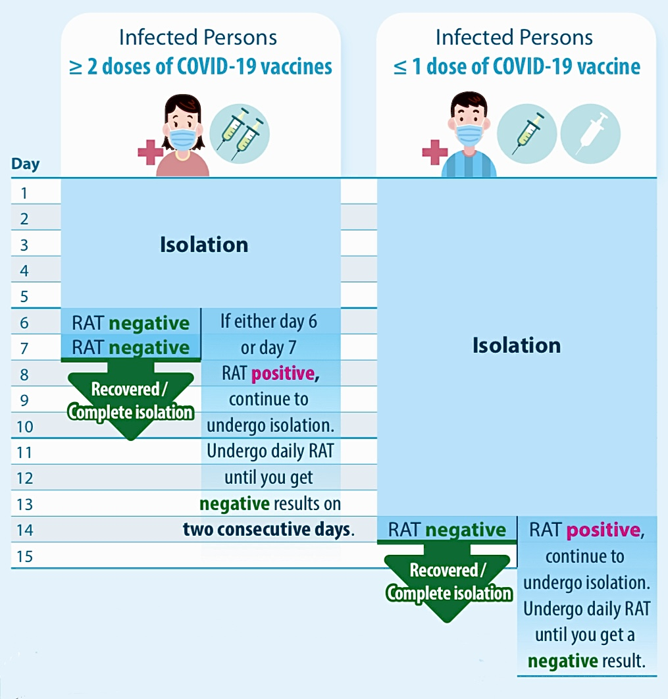

1.1:Current Situation - What should individuals do during the whole process?
Preventing
- Get vaccinated
COVID-19 vaccines can protect individuals from severe illnesses and complications from COVID-19. As fully vaccinated individuals have much lower fatality rate than those who are not fully vaccinated, it is suggested to get vaccinated as soon as practicable.
Positive
- What should you do?
If you obtain a positive COVID-19 nucleic acid test result, you will receive an SMS notification about the result,
together with a request to fill in an electronic form ( www.chp.gov.hk/cdpi) to submit information, including those on family members living in the same household.
If you are considered as infected by obtaining a positive RAT result, please report via the online platform “Declaration System for Individuals Tested Positive for COVID-19 Using Rapid Antigen Test” (www.chp.gov.hk/ratp ).
- Minimising Risk of Household Transmission
To reduce the risk of infecting household members, you should:
- Avoid face-to-face contact (including having meals) or sharing personal items with others and stay in your room;
- Arrange a designated toilet;
- Maintain good ventilation by keeping windows open.
- Clean and disinfect your home environment daily.
It is best to install an air purifier in your room. Operate continuously at maximum power;
Infected persons may seek assistance from household members to help with garbage disposal.
- Using electronic wristband
The Government will arrange staff to visit your dwelling place to deliver and put on electronic wristbands and install the “StayHomeSafe”mobile app, together with anti-epidemic kits. They will monitor whether you stay in your dwelling place during your isolation period by means of the electronic wristband.
When you have followed the above testing arrangement and if you have received at least two doses of COVID-19 vaccines, and obtain RAT negative results on both Day 6 and Day 7,or when you are admitted to a hospital or isolation facility, you may cut and dispose of the wristband.
The Department of Health will issue an isolation order to you and quarantine order(s) to your household member(s) respectively via SMS specifying that you and your household member(s) have to undergo isolation / quarantine for at least 7 days. Please avoid going out. You and your household member(s) have to comply with the legal requirements stipulated in the orders.
Stay calm and monitor your health during the period of isolation. Vaccinated persons may be asymptomatic or only develop mild self-limiting symptoms.
After Recovery
- Completion of isolation
The Department of Health will issue an isolation order to you and quarantine order (s) to your household member(s) respectively via SMS. You have to comply with the legal requirements stipulated in the orders.
The default isolation period is 14 days. If you have received at least two doses of COVID-19 vaccines AND obtained negative results on Day 6 and 7 (or any two successive days thereafter), you will be considered as having completed isolation and may continue with your daily activities.

- Further vaccinations
For some recovered persons, viral genome fragments in the body may present in nucleic acid tests. As such, for confirmed cases who have recovered and finished isolation, they do not need to take other nucleic acid tests within three months from the specimen collection date of positive test result, unless they are instructed by a healthcare professional or the Government to undergo testing.
1.2:Case study
How do individuals from different path of life thought of their lives during COVID-19?
Infected and unemployed, a 6-person Hong Kong family’s 2-week Covid-19 home quarantine ordeal
Get to know more about the article : HERE!
1.3:Health Tips
- Take rapid antigen test (RAT) everyday
Only go to school or work if RAT result is negative
- Monitor your health condition daily
If you feel unwell (regardless of RAT result)
- Do not go to school or work
- Seek medical advice promptly
•If you are tested positive, stay calm and monitor your health condition during isolation. Vaccinated persons may be asymptomatic or only develop mild self-limiting symptoms.
•If warning symptoms develop, go to an A&E facility directly.
Warning Symptoms:
Persistent fever (>38.5°C) for more than 2 days despite fever-reducing medicine, onset of difficulty breathing or shortness of breath, pain or pressure in chest or abdomen, decreased or no movement of foetus (for pregnant women at ≥ 24 weeks of gestation), marked change in mental status in children, etc.
•Persons in the high risk group should look out for changes in their health conditions.
Aged 70 or above, aged 5 or below, pregnant women at 28 or more weeks gestation, or with a history of significant conditions causing immunosuppressive state.
- Maintain personal and environmental hygiene at all times
- Personal protective measures should be taken by performing hand hygiene frequently and observing cough manners
- Avoid face-to-face close contacts with others (especially when either side is not wearing a mask, such as when eating)
- Wear your masks properly
Prevent diseases · Maintain good hygiene
- Get vaccinated as soon as possible
- Vaccination is crucial to protect children and adolescents against COVID-19 disease to effectively decrease the rates of serious illness and death
- Book your vaccination: www.covidvaccine.gov.hk/en/
- Maintain healthy lifestyle to enhance body immunity
- Pay attention to a balanced diet
- Exercise more
- Get sufficient rest and sleep
Only go to school or work if RAT result is negative
If you feel unwell (regardless of RAT result)
- Do not go to school or work
- Seek medical advice promptly
•If you are tested positive, stay calm and monitor your health condition during isolation. Vaccinated persons may be asymptomatic or only develop mild self-limiting symptoms.
•If warning symptoms develop, go to an A&E facility directly.
Warning Symptoms:
•Persons in the high risk group should look out for changes in their health conditions.
- Personal protective measures should be taken by performing hand hygiene frequently and observing cough manners
- Avoid face-to-face close contacts with others (especially when either side is not wearing a mask, such as when eating)
- Wear your masks properly
Prevent diseases · Maintain good hygiene
- Vaccination is crucial to protect children and adolescents against COVID-19 disease to effectively decrease the rates of serious illness and death
- Book your vaccination: www.covidvaccine.gov.hk/en/
- Pay attention to a balanced diet
- Exercise more
- Get sufficient rest and sleep
Further Tips from HKFWS: Communication During COVID-19